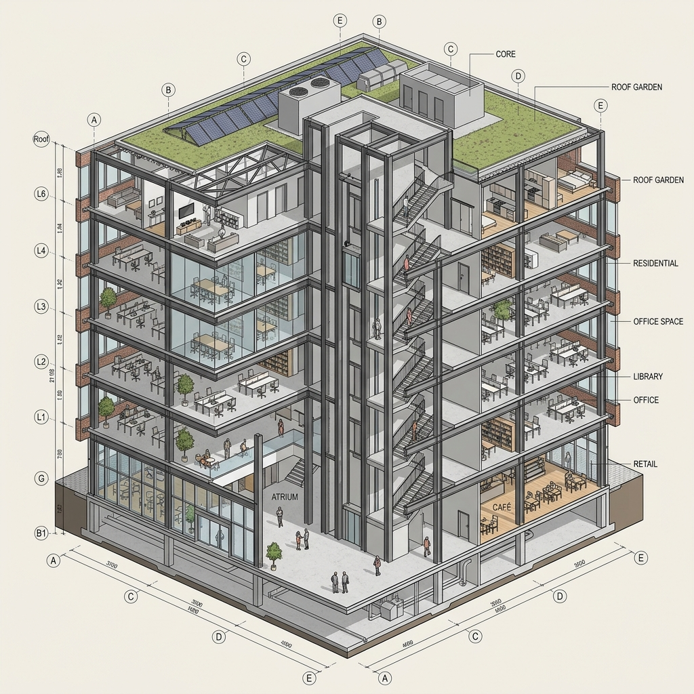

Every six months a "Revit killer" lands and disappears. Some of them are pretty. Most of them confuse modeling speed with the actual job, which is producing a coordinated, documented, scheduled, fee-defensible set of drawings. We have been skeptical for the same reason most architects are skeptical: BIM is not a drawing problem.
Snaptrude is the first tool in two years we have run on a live project past the seventy-two-hour novelty period. It is browser-based, multiplayer, has AI baked into the geometry rather than bolted on, and its programmatic layer treats a "room" as something that knows it is a room. We tested it on a 38,000 sq ft mixed-use scheme currently in SD — ground-floor retail, four residential floors above, a small bar tenant at the corner. Two weeks of real fee time.
Cloud-native, AI-powered BIM platform aimed at early-stage architectural design. Multiplayer by default. Bidirectional Revit and SketchUp interoperability. Strong on massing, program, and SD-phase modeling. Documentation output remains the weakest link.
What "AI-native" actually means here
Most BIM tools that claim AI have grafted a chatbot onto the side — you ask it questions, it returns text, the geometry does not change. Snaptrude is doing something different. The AI sits inside the program logic: when you sketch a rectangle and tag it as "two-bedroom unit," the platform knows what that means structurally, what the typical room mix is, where wet stacks plumbing should fall, and how the unit relates to building code minima.
In practice this looks like: we drew a rough floor plate, dropped four residential unit tags, and Snaptrude generated a parametric unit layout for each — with bedroom locations, plumbing wall alignment, and door swings. None of it was final, but all of it was correct enough to be edited rather than thrown away. That is the part that matters.
The difference between AI-as-feature and AI-as-substrate is whether the model is editing your geometry or just describing it. Snaptrude is editing.
This worked best for residential program. We tried the same workflow on the retail floor and the assistance was thinner — the AI did not have strong priors for "small bar tenant" the way it did for "two-bedroom unit." That gap will close as the training data matures, but in May 2026 it is real. If your work is residential, hospitality, or mixed-use with familiar program types, the program logic is genuinely useful. If you do esoteric commercial or specialized institutional work, expect to do more of the heavy lift yourself.
The cloud-native part is the killer feature
We have done a lot of remote BIM work in the last five years and the rough truth is: Revit collaboration is still terrible. Worksharing exists, BIM 360 exists, but the experience is brittle and the conflict-resolution model assumes you are mostly working alone with occasional handoffs. Snaptrude is Figma-grade multiplayer — two of us were editing the same floor plate simultaneously, with cursors visible, no save conflicts, no detach-and-merge ritual.
For small firms this is a different working pattern. The senior architect can drop into a junior's file mid-session, fix three things, and leave. No file transfer. No "send me the latest." On the Philadelphia project, we cut review cycles from days to hours because the partner was annotating the model live during her commute rather than waiting for a packaged set.
The latency held up. We did not see model drift or out-of-sync states during the two-week test, even with three users active. There is a noticeable spinner on larger floor plates — the cloud rebuilds the geometry rather than caching locally — but it is acceptable for SD work. We would not push it to full CD geometry yet.
Revit interop is good but not invisible
Snaptrude advertises bidirectional Revit interop and it works, with caveats. We exported our SD model to Revit at the end of week one. Walls, floors, and unit types came across cleanly. Door schedules transferred. Window types preserved their parametric metadata. That alone is more than most "Revit-compatible" tools deliver.
What did not survive cleanly: anything custom we modeled with the freehand tools. Snaptrude has a sketch mode that lets you draw arbitrary shapes the way you would in SketchUp, and those shapes export as generic mass objects in Revit rather than as native families. If your handoff plan is "model in Snaptrude, finish in Revit," you have to stay disciplined about using the structured BIM elements rather than the freehand sketch tool. The platform makes the freehand mode tempting because it is fast, but that speed costs you on export.
The reverse direction (Revit import into Snaptrude) is better than we expected. We imported an existing Revit model from a colleague's project as a sanity check. Most elements came across, families became Snaptrude objects with editable parameters, and the model was usable for review and markup within twenty minutes. We would not start a project this way, but it is good enough for "show this to a client in a browser without making them install Revit Viewer."
What it does not yet do
Documentation. This is the honest gap. Snaptrude produces sheets and views, and you can generate plan, elevation, and section drawings, but the annotation, tagging, and dimensional control needed for a real CD set is not there yet. We tried to push a partial CD set out of the platform and the result felt closer to "schematic with hatching" than "permit-ready drawings." For now, the workflow is Snaptrude for SD/DD, then export to Revit for CD.
Structural and MEP coordination. There is no native clash detection. There is no IFC-rich MEP modeling. You can bring in consultant Revit models as references, but the kind of multi-discipline coordination work you would do in Navisworks is not in scope. Snaptrude is positioning itself as the architectural front-end, with Revit and other tools handling the back-end heavy lifting.
Plug-in ecosystem. Revit's depth comes from twenty years of third-party tools — Enscape, Veras, Dynamo, Revizto, every flavor of analysis plugin. Snaptrude has API access and a small but real plugin ecosystem, including a Veras integration we tested briefly. It is not Revit-scale and will not be for several years. If your firm's workflow depends on a specific Revit plugin, do not switch yet.
Snaptrude vs Revit on SD-phase work
| Task | Revit | Snaptrude |
|---|---|---|
| Initial massing & floor plate iteration | Slow — family overhead | Fast — sketch & tag, AI fills in |
| Real-time multi-user editing | Worksharing — functional but brittle | Native multiplayer — Figma-grade |
| Unit plan generation | Manual or Dynamo-driven | AI suggests parametric layouts |
| Sheet documentation & CD set | Industry standard | Partial — not permit-ready |
| Plug-in ecosystem | Deep — twenty years deep | Small but growing |
| Client review | Revit Viewer install required | Send a URL |
| Cost (per seat) | ~$2,800/yr Revit subscription | $39–$99/mo |
Who should actually try it
Small to mid-size firms doing residential, hospitality, or mixed-use SD/DD work. The combination of AI program logic and cloud multiplayer compresses the schematic phase in a way Revit cannot, and the cost is a fraction of a Revit seat. If you spend most of your fee time on SD iteration with the partner and a handful of staff, Snaptrude is the strongest tool we have used.
Firms that already pay for Revit but want a frontend for client-facing iteration. The interop is good enough to use Snaptrude for the messy, fast-changing front of a project and migrate to Revit when the model stabilizes. We will likely keep doing exactly this on the Philadelphia project.
Students and educators. The free tier is generous, the learning curve is shallower than Revit's, and the cloud-native model fits how studios actually work. If you are teaching SD-phase BIM in 2026, this is a defensible alternative to Revit Education.
Who should not switch yet
Firms doing complex CD work in-house. The documentation gap is real and will cost you. Wait twelve months or use Snaptrude only for the SD phase with a clean handoff to Revit.
Firms with deep Revit plugin investments (Enscape, Dynamo scripts, custom families). The cost of porting is not yet justified by the benefit.
Anyone whose insurance, jurisdiction, or client requires a specific BIM authoring platform on the deliverable. Worth checking the contract before you switch.
Our take
For the first time we have written a "Revit alternative" review without the word "almost." Snaptrude is not a complete replacement — the documentation gap is significant — but it is the first cloud-native BIM tool whose AI feels load-bearing rather than decorative. The fact that we are keeping it in our actual workflow past the test period is more meaningful than any feature inventory.
If the platform closes the documentation gap in the next twelve to eighteen months — and the team is signaling that is the priority — the conversation about Revit's monopoly on architectural BIM will change. For small firms in particular, the economics already favor the switch on a project-by-project basis. The question is when the institutional inertia breaks.
Tested by Vista Studios on a 38,000 sq ft mixed-use SD project. No affiliate relationship with Snaptrude. Tested across two weeks of fee time with three active users.